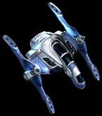
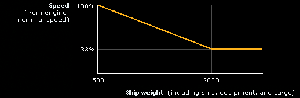

Handbook >
Standard equipment
|
Handbook >
Standard equipment
|
| Standard equipment The standard equipment enclose engine, fuel tanks, radar, scanner, droid, gripper, defense field generator. You can buy all these in any equipment store and mount at your ship. Besides, in the store you can buy a ship hull, which in fact represents a container that houses other equipment. Each equipment type has the following parameters: type, size, manufacturing race and price. The high is the development level of the race, which manufactured an item, the more is its price and the longer it will be in service without the maintenance.  HullHull is actually the ranger's ship. The most important characteristics of a hull are its capacity and the amount of equipment slots. The differences in the capacity and amount of open and closed slots make the hulls to be divided into hull series. The hit points of a ship are numerically equal to its capacity. If a hull is damaged, it can be repaired by a droid during a flight or in a hangar at each space station. |
|
Hull types:
The hull size and the amount of active slots depend on the ship type. For example, a military ship has more weapon slots than a merchant ship, however the latter has a more capacious hold. Note. The hull type determines, how many damage units from each shot will be neutralized by the ship armor. However initially the damage received will be diminished by the defense field, if the ship is equipped with a defense field generator. Amount of hit points is calculated using the following formula: Damage = shot strength * (100% - defense field power) - hull armor |
|
When buying a hull, pay attention to the pop-up message.
It displays the hull characteristics. The scheme of hull in the left part of the pop-up
window repeats the amount of slots and boost (if any)
in the window 'Ship'(S).
|
|
Variants of hull adjustments:
The hulls are divided into series. Each series represents a modified standard hull of different quality and price: it defines the amount of slots and general size. In this way, there is a large amount of hull variants slots, which can boast different amount of slots. Note. Compared to other types of equipment the player can't sell the available hull, but only can buy a new one. The hull from the store will be delivered to the storage, where the player can replace the active hull. |
| Engine The engine is designed for moving a spaceship in the common space and for making hyper-jumps. The fuel consumption is the common space is negligibly small. The consumption of fuel during a hyper-jump makes one unit per parsec. The type and the power of an engine influence the speed developed / distance of a hyper-jump. Engine types:
Minimal size: 20 If an engine is damaged, the ship speed turns to be miserably low. In this case it's worth to fly to the nearest planet and repair the ship. For those who wish to comprehend the game mechanics and calculate the real speed of a ship: The basic speed of a ship isn't its real speed, it depends on the ship's load. On the basis of the following formula: Speed in % from the nominal, which is equal to = 122,333 - 0,045 * Weight Note: if the ship speed is larger than 2000, the index is equal to 33%. Graphical introduction of the formula:  Examples: 1) We have a spaceship weighing 380 and an engine with the max. speed of 400 - it means that its maximal speed will make 400. 2) We have a spaceship weighing 1000 and an engine with the max. speed of 800, according to the formula its speed will make 77% from the nominal, it means that real speed will make 800*0.77=616 units. Another factor, which reduces the speed is the engine overheat during a battle. Shots and frequent maneuvers can result in double reduction of the speed. |
| Fuel tank Its destination is obvious. The more fuel there is in the fuel tank, the farther hyper-jump a ship can make without refueling. If the fuel is over, a ship can move only within the current star system. The amount of fuel in tanks depends on their volume and type. Types of fuel tanks:
Minimal size: 20 The total capacity of the fuel tank is calculated using the formula:Total capacity = size / 2 + basic capacity 0.5 is rounded down. Hyperliquid - 10 Condenser - 15.5 Reductional - 20 Protobubble - 25.5 Positional - 30 Endocluster - 35.5 Gyroscopic - 40 Tecrine - 45.5 Note. If a tank is damaged, it starts leaking, though it continues to function. |
| Radar The radar helps to see various objects in the space (planets, stations, spaceships) and determine their main parameters - size, speed, designation, etc. The information from the radar is displayed at the radar panel. The radar operation range depends on its type. Radar types:
Minimal size: 15 If a radar is not mounted or is damaged, the navigation is significantly impeded. Besides, it makes impossible to talks to other ships, as well as scanning them. |
| Scanner A scanner gives an opportunity to research the interior of another ship, i.e. see the equipment and weapons, mounted inside it. This information comes useful in battle, as you will always have the image of enemy's force. The scanning is possible only if the scanner power allows to overcome the defense field of the ship being scanned. The scanner power depends on its type. Scanner types:
Minimal size: 15 The scanner functions only in the radar operation range. If the radar is not mounted or out of order, the scanner is inactive. Impossible to scan the dominator ships. |
| Droid The repair droid is designed to restore the spaceship shell and can working during a flight. Within a day a droid can restore N units of the ship hull. N depends on the droid type. Droid types:
Minimal size: 20 |
| Gripper Gripper is designed to pick up items abroad a ship. Items can appear in the space both in a natural way, and as a result of hostilities in the space. When a ship gets destroyed, a part of it or a part of its cargo or equipment can remain safe and drop down into the space. The gripper power and its operation range depend on the gripper type. Gripper types:
Minimal size: 20 |
| Defense field generator The generator creates a defense field around the ship, it reduces the damage delivered by the enemy by a certain percent, depending on the generator power. Besides, if the defense field power is larger than the scanner power of another ship, your ship will be protected against the undesirable scanning. The defense field power depends on the generator type. Defense shield generator types:
Minimal size: 20 |
| |